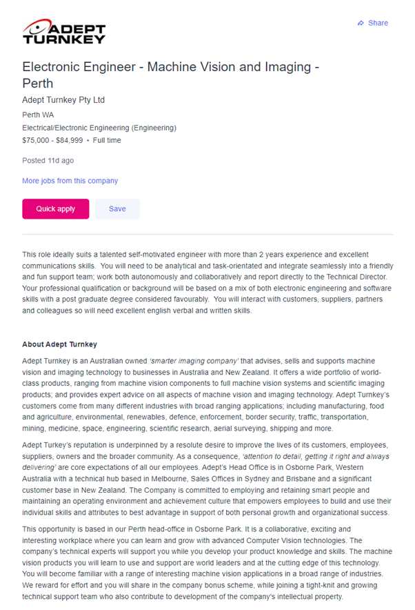

Ideal job
There is an advertisement for Electronic Engineer for Machine Vision and Imaging position in a growing company that works with products in this field. It works with customers from ranging fields of applications, from manufacturing to defence. That means that it requires constantly learning about things and being curious how thing are made.
Skills, qualifications and experience required to be Electronic Engineer
Technical skills and deep understanding of about how electrics/electronics are required as there are certain factors that can be harmful to health. Good computer skills, like knowing Windows OS/Linux and programs like Mathlab are necessary when dealing with embedded software development.
A Plan to acquire the skills needed for my Ideal job
A degree in Information Technology would be a good start. That way could get a good understanding of programming languages and software development. As I have already some background with electronics that isn`t too frightening, I believe going through some courses would definitely refresh memory. That would mean that in 4-5 years could already start thinking of applying for the position. Good thing with this company is that they are looking for a long term position with this application and are willing to teach as well. There is a strong possibility that they might consider graduate applications. Having personal portfolio of project would be beneficial as well.
Job advertisment position

Current skills and qualifications
I have already learned little bit about electronics in the past, but those probably need a refresher. Having a good goal post towards to aim with this position means that I would have to carry on with Bachelor in Information Technology and learn the required key skills for the qualification. I have got a 5 year leading hand position experience in a fast paced concrete furniture manufacturing company. Team work and delegation are always desirable skills for employers. With Bachelor degree a chance to get hired as an junior developer in a company is good possibility.
Plan to obtain new skills required for the job
Firstly, I need to get a solid foundation in Information Technologies. For that a bachelor’s in information technologies is a good start.
Some time at that position and further training should make me employable in the field
So to conclude:
- Bachelor of IT
- Junior position in similar company to get real life experience in the field
- Build portfolio
- Apply for position
Who is Electronic engineer?
Electronic engineers build and design consumer products to make life better for everyone
back to main page